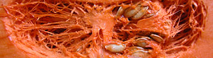

Kürbiscrémesuppe
4 von 6der kürbis schälen und in stücke schneiden. einige kartoffeln dazugeben und mit einer zwiebel andämpfen. mit bouillon und dem saft einer orange ablöschen und weich kochen. alles mixen und mit curry, pfeffer, salz und ein wenig muskat würzen. nach belieben mit rahm verfeinern.
